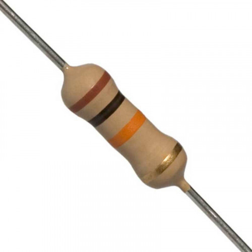
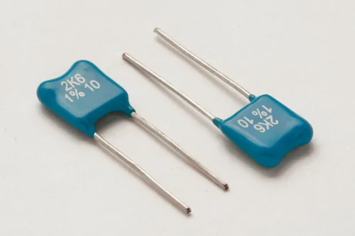
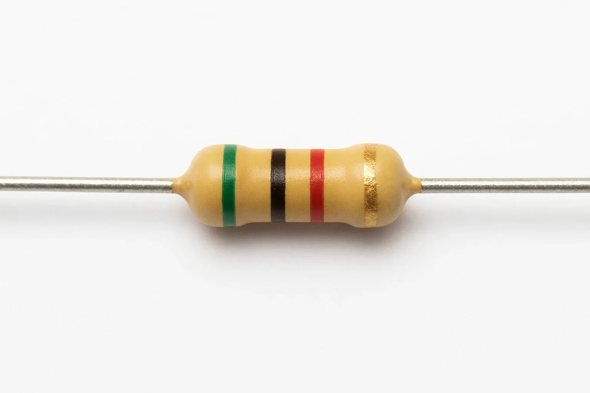

AXIAL LEADED CARBON FILM RESISTOR

RADIAL LEADED CARBON FILM RESISTOR

HIGH VOLTAGE CARBON FILM RESISTOR

HIGH POWER CARBON FILM RESISTOR

PRECISION CARBON FILM RESISTOR

GENERAL PURPOSE CARBON FILM RESISTOR